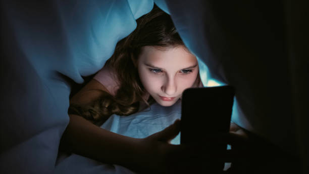

Are We Addicted to Our Screens?
In todays digital world, screens dominate every part of our lives from work to leisure. But as our screen time increases, so does concern
over its impact on mental health, sleep, and relationships.
Experts warn that excessive use of devices can lead to “screen
addiction,” making it harder for people to disconnect and focus on real
life interactions.

Teenagers Spend Over 7 Hours a Day on Screens
A new study shows that the average teen now spends more time on their
phone than sleeping. Many teenagers today are spending late nights glued to their phones, scrolling through social media, texting friends, or watching videos.
This habit has become increasingly common with the rise of apps designed to capture users’ attention for long periods.
However,staying up late on phones can negatively affect teens sleep patterns and overall health.
Lack of sleep often leads to poor concentration in school, mood swings, and fatigue during the day. Experts warn that the blue light from screens can also interfere with the body’s natural sleep cycle.
Parents are encouraged to set boundaries and promote healthier bedtime routines. Ultimately, limiting phone use before bed can help teenagers rest better and improve their mental and physical well being.
Families Struggle to Set Screen Time Limits
Setting rules around device use has become harder than ever. Experts
recommend screen free dinners and outdoor activitiesMany families today find it hard to set limits on screen time.
Phones,tablets,and TVs are part of everyday life, making it tough to take a break. Parents often struggle to get children to put their devices down. Experts say that families should have screen free dinners to spend more time talking together.
They also suggest doing outdoor activities like walking or playing sports. These habits help families connect and stay healthy. Setting small, simple rules can make it easier for everyone to enjoy time without screens.

Remote Work: The Hidden Screen Trap
While remote jobs offer flexibility, they often increase total daily
screen hours. Balancing work-life boundaries is crucial.Remote work allows people to work from home and have more freedom with their time.
However, it also means spending more hours in front of screens. Many workers use computers for meetings, emails, and projects all day long.
This can lead to eye strain, tiredness, and less time away from technology. Experts say it’s important to take breaks and move around during the day.
Setting clear work hours can also help keep a healthy balance between work and home life. By managing screen time wisely, remote workers can stay productive and protect their well-being.